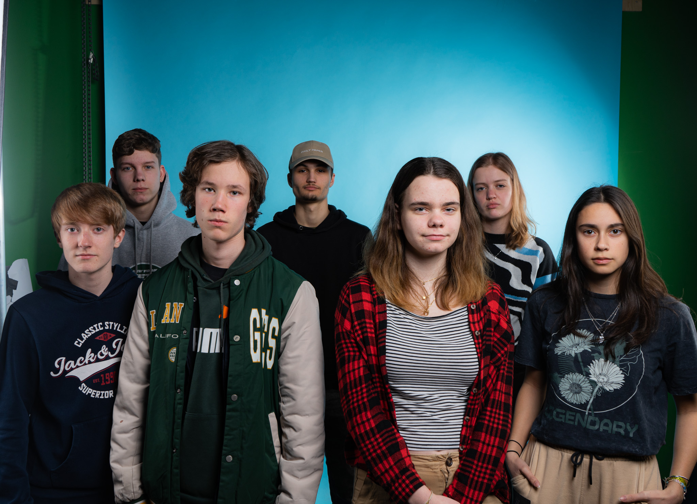

.jpg)
In dit project zijn wij met de opleidingen MediaDesign en SoftwareDeveloper een opdracht aangegaan waar wij een robot moesten designen en programeren. Wij mochten zelf bepalen hoe de robot eruit zou zien en wat het allemaal kon. Er waren wel een aantal eisen de robot moest kunnen slaan kunnen rijden en objecten kunnen ontwijken. Op deze website zie je wie wij zijn en wat wij hebben ontworpen/geprogrammeerd
About Us
Milan
Phasellus id leo sapien. Praesent diam nisi, dictum ut lectus vestibulum, tempor vulputate sapien. Aliquam non magna risus. Donec bibendum, nisi sit amet mollis dignissim, sapien nisl vulputate tortor, nec sodales augue mauris et sem. Nulla facilisi. Sed nec ultrices libero. Etiam ut venenatis nulla. Nulla varius diam in sollicitudin iaculis. Sed eu egestas risus.
Damien
hallo ik ben Damien, ik ben 21 jaar oud en ik doe de opleiding Software Developer. Ik ben tijdens dit project bezig geweest met de website en de robot progameren.
Madeleif
hallo ik ben Madelief, ik doe de opleiding mediavorgmeving op ROC Nijmegen. Ik ben tijdens dit project bezig geweest met het maken van het logo concept voor de robot, ik heb behind the scenes foto's gemaakt, en ik heb de illustratie van de robot gemaakt.
Delta
Hallo ik ben Delta, ik zit op de Mediavormgeving opleiding van ROC Nijmegen. Tijdens dit project heb ik verschillende logo concepten gemaakt, verder heb ik nog de website mockup gemaakt ook de moodboard en billboard.
Franka
hallo ik ben Franka, ik zit op de opleiding mediavormgeving op het ROC in Nijmegen, tijdens dit project heb ik gewerkt aan de schets van de robot en bepaalde dingen uit te werken, en het een professionelen uitstraling te geven.
Lourdes
Mijn naam is Lourdes, ik ben 18 jaar oud en doe de opleiding mediadesign op het ROC technovium in Nijmegen. Tijdens dit project heb ik geholpen met de bouw van de robot. Ook heb ik geschetst voor het teamlogo en robotlogo concepten. Ik heb de schets van de poster uitgewerkt tot wat we nu hebben. Ook heb ik de pitch gemaakt.
Sila
Hallo ik ben Sila, ik doe de opleiding mediavormgeving op het ROC, ik ben in dit project verantwoordelijk geweest voor onder anderen, het bedenken van de groepsnaam, daarvan heb ik vervolgens ook een logo concept ontworpen dat verder is uitgewerkt door de andere mensen uit mijn team. Ik heb het proces gefilmd en vervolgens samen gezet in de aftermovie, ik heb ook een start gemaakt aan de powerpoint presentatie en 2 concepten gemaakt voor de poster.
Alfred
beep boop beep
Aflfred

Dit is Alfred, Alfred is een robot die wij bedacht hebben om een parkourtje af te leggen, alfred heeft een vermogen van 600hp en gaat deze race 100% winnen. TOT IN DE ARENA!
Conclusie
Wij als team hebben hard gewerkt aan dit project en hebben zo onze ups en downs gehad maar hebben het uiteindelijk met zijn allen het kunnen maken en daar kwam alfred uit.
